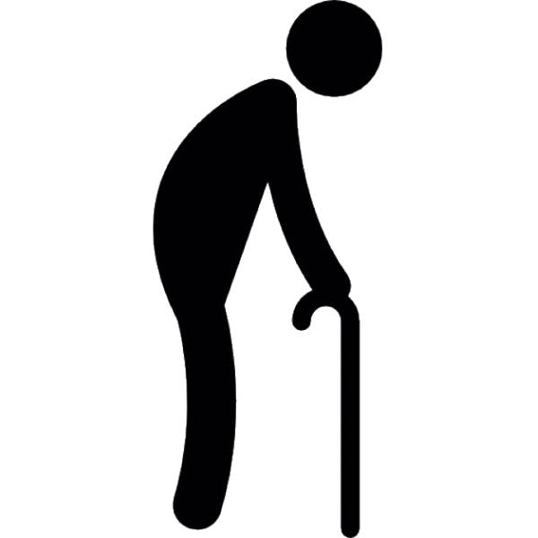

De Titanic
Scroll om te beginnen
Verhouding tussen mannen en vrouwen op de boot
Man:
ErrorA1
Vrouw:
ErrorA1
Wat was de gemiddelde leeftijd op de boot?
0
25
50
75
100

Waar stapte de mensen op.
Feedback is welkom, open wordbestand. (alt tab)